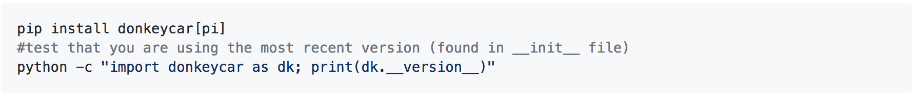

Configure the Raspberry Pi
Before we can do anything we have to get our car's computer connected to the internet. The fastest way is to use the disk image created for donkey cars.
Get the Raspberry Pi Working
The method for using a disk image to create a bootable SD card varies between operating systems. These instructions are for Ubuntu but you can see more instructions here.
- Download prebuilt zipped disk image for RPi 3B and 3B+ for RPi Zero (1.1GB).
- Unzip the disk image.
- Plug your SD card into your computer.
- Open the Startup Disk Creator application.
- Select your source disk image as the one you unzipped earlier.
- Select your SD card as the disk to use.
- Click Make startup disk.
Setup the Pi's WiFi for first boot
We can create a special file which will be used to login to wifi on first boot. More reading here, but we will walk you through it.
On Windows, with your memory card image burned and memory disc still inserted, you should see two drives, which are actually two partitions on the mem disc. One is labeled boot.
On Mac and Linux, you should also have access to the boot partition of the memory disc. This is formatted with the common FAT type and is where we will edit some files to help it find and log-on to your wifi on it's first boot.
- Start a text editor: gedit on Linux. Notepad on Windows. TextEdit on a Mac.
- Paste and edit this content to match your wifi:

Replace <your network name> with the ID of your network. Leave the quotes.
I've seen problems when the network name contained an apostrophe, like "Joe's iPhone".
Replace <your password> with your password, leaving it surrounded by quotes.
If it bothers you to leave your password unencrypted, you may change the contents later once you've gotten the pi to boot and log-in.
- Save this file to the root of boot partition with the filename wpa_supplicant.conf. On first boot, this file will be moved to /etc/wpa_supplicant/wpa_supplicant.conf where it may be edited later.
Setup the Pi's Hostname
We can also setup the hostname so that your Pi easier to find once on the network. If yours is the only Pi on the network, then you can find it with

Once it's booted. If there are many other Pi's on the network, then this will have problems.
If you are on a Linux machine, or are able to edit the UUID partition, then you can edit the /etc/hostname and /etc/hosts files now to make finding your pi on the network easier after boot.
Edit those to replace raspberrypi with a name of your choosing. Use all lower case, no special characters, no hyphens, no underscores _.

Now you're SD card is ready. Eject it from your computer, put it in the Pi and plug in the Pi.
Connect to the Pi
If you followed the above instructions to add wifi access your Pi should now be connected to your wifi network. Now you need to find its IP address so you can connect to it via SSH.
The easiest way (on Ubuntu) is to use the findcar donkey command. You can try ping donkeypi.local
If you've modified the hostname, then you should try: ping <your hostname>.local.
This will fail on a windows machine. Windows users will need the full IP address (unless using cygwin).
If you are having troubles locating your Pi on the network, you will want to plug in an HDMI monitor and USB keyboard into the Pi. Boot it. Login with:
- Username: pi
- Password: raspberry
Then try the command:

If this has a valid IPv4 address, 4 groups of numbers separated by dots, then you can try that with your SSH command. If you don't see anything like that, then your wifi config might have a mistake. You can try to fix with

If you don't have a HDMI monitor and keyboard, you can plug-in the Pi with a CAT5 cable to a router with DHCP. If that router is on the same network as your PC, you can try:

Hopefully, one of those methods worked and you are now ready to SSH into your Pi. On Mac and Linux, you can open Terminal. On Windows you can install Putty or one of the alternatives. If you have a command prompt, you can try:
If you have a command prompt, you can try:

Or

Or via Putty:
- Username: pi
- Password: raspberry
- Hostname:<your pi IP address>
If you are using the prebuilt image specified above, then your Pi is ready to go. You should see a mycar and donkey directory.
Note: Check config.py to make sure it uses the correct settings for the PWM channel for steering and throttle. Open config.py nano ~/mycar/config.py and make sure that you see the lines:
- STEERING_CHANNEL = 1
- THROTTLE_CHANNEL = 0
The 1 and 0 for the parts arguments should match whichever channel you used to plug your servo/ESC leads in to your 9685 board. Usually this ranges from 0-15 and it numbered on the board.
Note: If you are using the prebuilt image specified above, your Pi is not using the full capacity of the SD card. To make the full capacity accessible, SSH into the Pi and run sudo raspi-config to go into the configuration tool. Select 7 Advanced Options and A1 Expand Filesystem. And then select <Finish> to exit the configuration tool and reboot. The Pi can access the full capacity of the SD card now.
Install Donkeycar
The disk image only has the libraries(tensorflow..) installed, not donkeycar.
Create your car app.
Now generate the drive script, config and folder structure for your car.